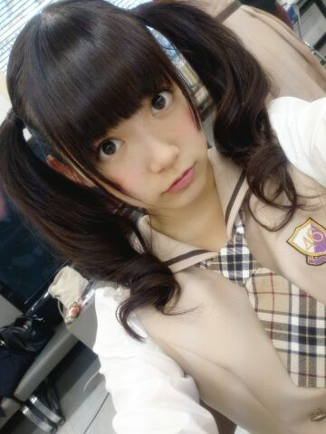
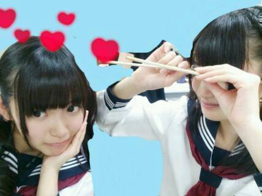

| 2013/11 13 Wed | ひめたん(*>ω<*)そ の368 |
45°右に傾けてーこんにちは♪

個人PV ダイジェスト盤が
公開されました☆
タイトルは「空へ」
そうですひめたんなんと
お空を飛んだんです*\(^o^)/*
詳しくは
発売されてからのお楽しみとゆーことで......
この前は
衛藤・若月・秋元・川後・飛鳥・中元で
月刊ヤンマガさんの撮影でした☆
発売日とかはまた告知しよっかなーって思うけど
もう！楽しかった！素で笑ってます！
いつもコメントありがとうございます
MJ行ったよーて方は感想ありがとーう♪
お留守番ちーむのみなさんも
オンエア楽しみにしてて下さいっ
ひめきゅんさんに入れてーってお声を
最近たまに聞きます
いらっしゃいませ∩^^∩うぇるかんーむ！
そして急に寒くなってきたけど
ひめたんは元気ですよー
みんなは風邪引いちゃだめだからねっ
さゆにゃんびーむ
ごめんなさいセンスないんです
ごめんなさい本当にごめんなさい......


 ひめたんビーム喰らったら、
ひめたんビーム喰らったら、
ゾンビが生き返るって本当ですか！？（笑）
そんなこと誰が言ったの？
ねえ誰が言ったの？ねえ(笑)
予告は罰ゲームだったのね。
ずっと気になってました。
握手会で披露してくれる？（笑）
日村さんのトドのモノマネのものまねかしら。
しません。絶対しませんっ
だから握手会でも振らないでください( ω )
あの、これまじで、まじトーンで言ってます
だからフリじゃないからまじだからっ！
ひめたんは辛い食べ物はOKなんですかー？？
OKだとしたら何が好きですか？
過度なやつは無理......だと思...います
舌が ひーっ！ ってなる。
熱いのもだけど、きっとみんなより
舌が弱いんだと思うのよ
この前の大会でね、
初めて全国大会に出ることが決まったの
だからお祝いしてほしいなーと思って...
わーおめでとーう＼(^O^)／
結果も大事だけど、何より自分を大事にして
最後まで全力を尽くしてください
応援してまーす♪
ひめたんビームの威力の単位ってなんですか？
へくとぱすかる？でしべる？
力ならボルト？
電流......アンペア？
そんな難しい言葉を遣うのは
ひめたんらしさに欠けると思うのよ。
だから......なんだろう１びーむ？

そして、公式から発表もあったように
乃木坂46から
ふたりのメンバーが卒業します。
ゆっきーな、せっちゃん
今まで本当にお疲れ様でした。
ゆっきーな (柏 幸奈ちゃん)は
学業のためということでしたが
私もゆっきーなも学校組。
ゆっきーなの大変さを
全てわかってあげられたわけでは
ないかもしれないけど
でもやっぱり学業との両立って大変なんだよね。
ゆっきーなは弱音を吐くような子じゃないので
どんな時もニコニコと事をこなしていたけど
裏ではきっと辛い思いも
あったんじゃないかなって。
普通なら自分のことで
精一杯になっちゃいそうなのに
現場では「みんなの迷惑にならないように」とか
いろんなことに気を遣っていて
優しい子だなー
そんなこと気にしなくていいのになって
いつも思ってました。
いつものほほーんとしてるのに
ライブのパフォーマンスになると
誰よりもキレがあって
心からライブが好きなんだよね。
そんなゆっきーなのパフォーマンスを
間近で見れて幸せでした。
せっちゃん (宮澤成良ちゃん)は
とにかく意識が高いがんばり屋さん。
ストイックで、努力家で、
せっちゃんこんなに頑張ってるんだーって
いつも頭が上がらなかったよ。
せっちゃんはスラッと背が高くてスタイルがよくて
お顔もお人形さんみたいにキレイで
性格もクールなのかなって最初思ったけど
話してみると天然で、ふわふわしてて
そんなギャップがまた魅力的。
乃木坂の中だけじゃなくどこへ行っても
唯一無二の存在なんじゃないかな。
せっちゃんも同じで
頑張ってるところとか辛いことを
誰にも見せないような子。
でも大きな悩みになる前に
もっとお話聞いてあげられたらよかったな。
今のせっちゃんは自分のやりたいことが
ハッキリと自分の中にあるんだよね
少し前にそのことを話した時に
せっちゃんのお顔がとってもキラキラしてて
これは応援してあげなくちゃって思いました。
ふたりとも
将来のビジョンをちゃーんと描いてて
本当に尊敬します
自分はこうしたい！って
強い意志を持っているからなのかな
すごくかっこいいよね(*^O^*)
今回の卒業も把握はしてたけど
やっぱり活字にして発表された途端に
急に実感が沸いてきて寂しい。
同じグループで活動するメンバーとして
本当はもっと一緒に頑張りたいし
引き止めたい気持ちもあるけど
悩んで悩んで決めたことだと思うから
ひめたんは笑顔で見送ることが大事だよね......
ふたりが将来の夢に
一歩近づく為の卒業だって考えたら
17日も晴れやかに迎えられるのかなあ。
違う道にはなってしまうけど
これからもずっとずっと応援するし
ひめたんももっと頑張らなきゃねっ！
乃木坂を離れても
いつまでも乃木坂ファミリーで
ひめたんの大切なお姉さんです
ゆっきーな、せっちゃん
卒業 おめでとう。
(´;ω;｀)
コメント(301)
2013/11/13 23:48